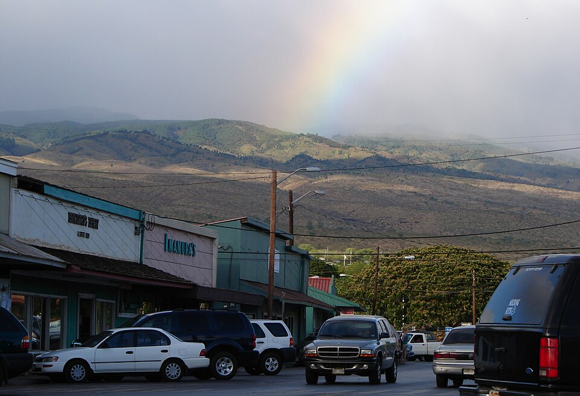

Kanemitsu's Bakery & Coffee Shop
Place: Kanemitsu's Bakery & Coffee Shop, 79 Ala Malama Avenue, Kaunakakai, Molokaʻi
Type: Historic bakery / coffee shop / family-owned business
Namesake: Brothers Shigeo and Fred Kanemitsu, sons of Japanese immigrants who founded the bakery around 1935
Story it tells: How two brothers baking bread for neighbors in a plantation-era community built a family business that became a Molokaʻi institution, famous for its late-night hot bread tradition.


The Kanemitsu family's story in Hawaiʻi began with Japanese immigrants who eventually settled on Hawaiʻi Island, where brothers Shigeo and Fred Kanemitsu were born in 1913 and 1919, respectively. The family later relocated to Molokaʻi, settling in Manila Camp, a plantation-era neighborhood just west of Kaunakakai. The camp was part of a larger network of residential communities that developed around Molokaʻi's agricultural economy, particularly its pineapple plantations.
In 1935, the brothers began baking bread in a brick oven behind their family home. Neither worked for the plantations; they simply enjoyed baking for their family. The aroma of freshly baked bread attracted neighbors, who began asking to purchase loaves. What started as a backyard operation gradually grew into a business, and in 1945 the family moved to a permanent storefront along Ala Malama Avenue in Kaunakakai. Shigeo perfected the bakery's signature white bread recipe in the early 1950s, helping establish Kanemitsu's Bakery & Coffee Shop as a fixture of the town.
Kanemitsu's became especially famous for its late-night hot bread tradition, which began in 1974. As is common in most small towns, most food businesses close early for the evening. Kanemitsu's Bakery & Coffee Shop saw a gap and stayed open late. After the local bars closed, hungry residents began visiting the bakery for freshly baked loaves. Customers lined up in the alley behind the building (down Hotel Lane), where steaming bread was sliced open and filled with butter, cream cheese, cinnamon sugar, or fruit jams. The nighttime ritual became one of Molokaʻi's best-known food traditions, drawing residents and visitors to an otherwise unassuming back-alley window.
The bakery eventually passed to Shigeo's son, George Kanemitsu, who continued the family business and its closely guarded bread recipe. In 2018, George partnered with Molokaʻi entrepreneur Makana Buchanan and his business partner Darren to bring the family's famous bread to other islands. Operating as Molokai Hot Bread, the venture began selling the signature loaves from food trucks and pop-up locations on Oʻahu before expanding to Maui, Kauaʻi, and Hawaiʻi Island. Although its reach has grown far beyond Kaunakakai, the bakery's name still honors the two brothers whose backyard oven started it all.